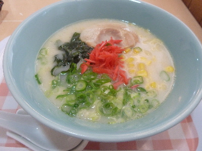

ピコピコの白湯ラーメン
2017/07/14
しまね和牛バーガーで有名なお店ですが、今日は暑かったので水分と塩分が欲しくなり、ラーメンを注文しました。

白湯ラーメンですが、とんこつラーメンみたいに紅しょうががあったり、普通のラーメンのようにチャーシュー、ワカメ、ネギ、コーンが入っています。
食べてみると、意外と違和感がなくて美味しかったです。
コーンが多目に入ってて好きな味でした。次もハンバーガー食べないでラーメン食べようかな。
島根県仁多郡奥出雲町横田1097
2017/07/14
しまね和牛バーガーで有名なお店ですが、今日は暑かったので水分と塩分が欲しくなり、ラーメンを注文しました。

白湯ラーメンですが、とんこつラーメンみたいに紅しょうががあったり、普通のラーメンのようにチャーシュー、ワカメ、ネギ、コーンが入っています。
食べてみると、意外と違和感がなくて美味しかったです。
コーンが多目に入ってて好きな味でした。次もハンバーガー食べないでラーメン食べようかな。